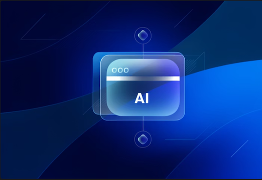
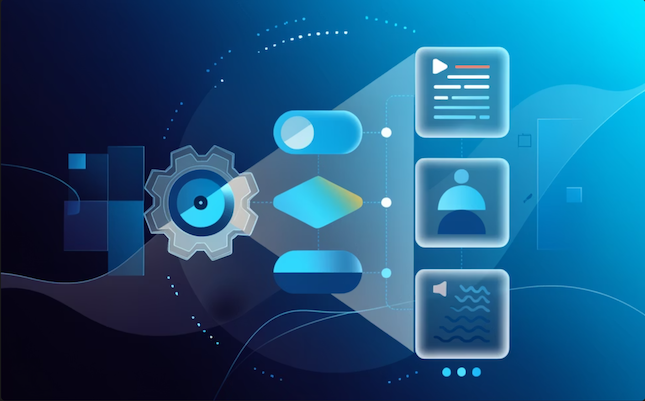
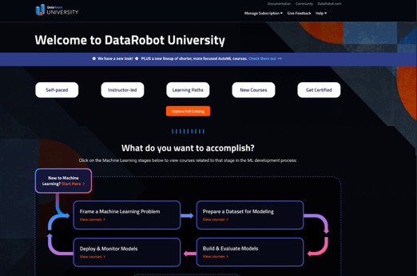
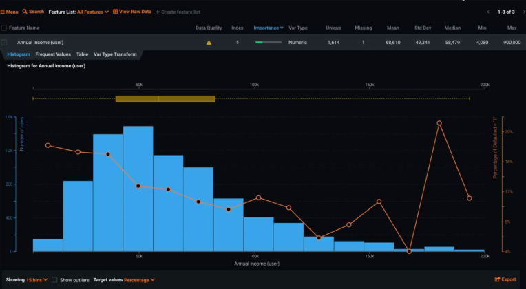
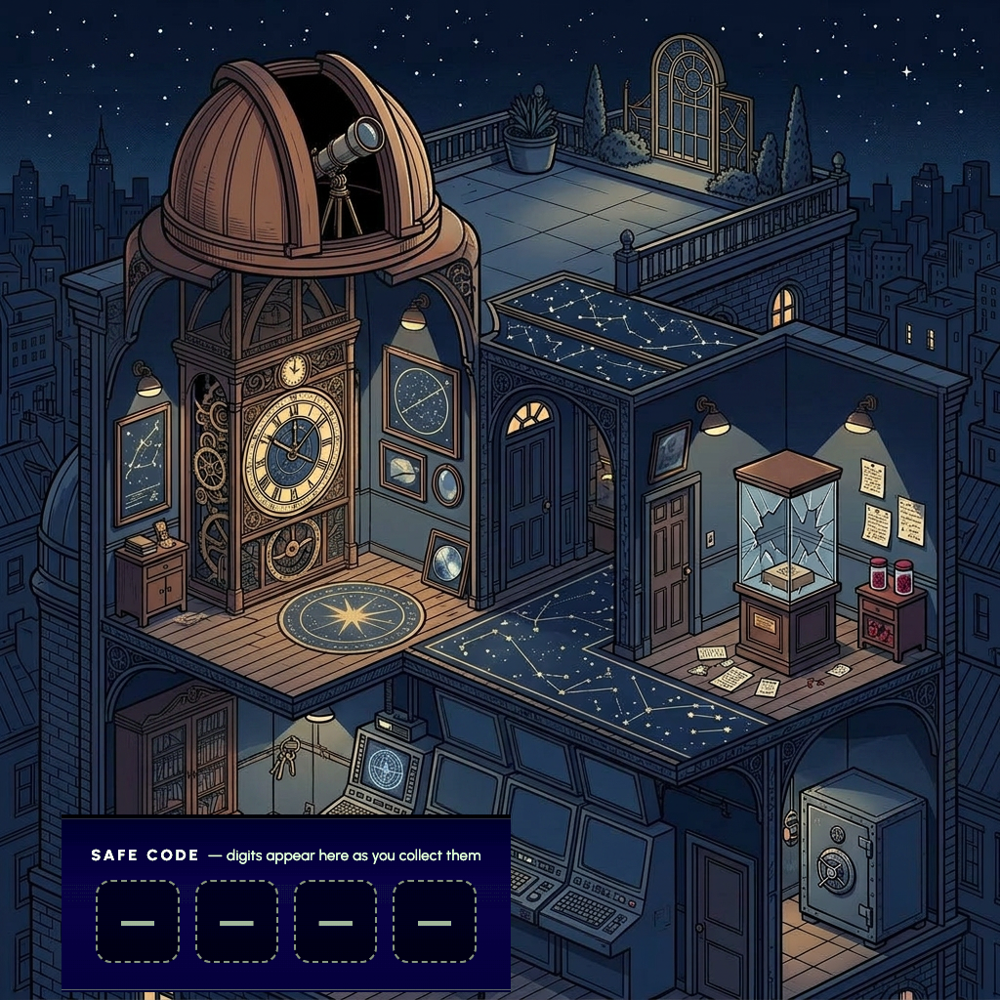
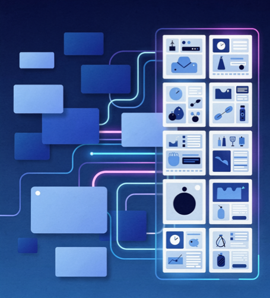

Strategic Transformations
Reshaping how organizations leverage content to drive business outcomes.
Programs that redefined strategy, information architecture, offer, operating models.

AI-powered content design & personalization
Two-phased program combining team enablement with tailored AI tooling for content creation at scale.

Unified content channels & architecture
Shared taxonomy, unified search, and phased system consolidation across siloed content teams.

Multi-channel digital enablement from scratch
Shifted from high-touch onboarding to scalable self-service enablement, certification, and community.
Legacy content system modernization
Revamped experience, catalog, and information architecture to support a modern content strategy.
Course Design & Creative
Engaging learning experiences that build skills for the real world.

Preparing Data for AI and Machine Learning
Setting yourself up for success in an AI/ML project.

Learning Feedback
Gamified assessment that increases engagement and retention.

Visual Design and Storytelling
Principles for creating compelling visual narratives to support learning.
Supporting Elements
Style guides, reference materials, and tooling.
Special Projects